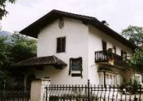

Karel Havlíèek Borovskı
(1821-1856)
Havlíèek se narodil v Borové u Pøibyslavi a zemøel v Praze. Byl vylouèen z knìského semináøe v Klementinu. Pùsobil jako vychovatel v Moskvì a po návratu z Ruska se stal redaktorem Praskıch novin.
Aktivnì se zapojil do revoluèního dìní v roce 1848. Stal se èlenem Svatováclavského vıboru, zaloil Národní noviny (1848-1850) se satirickou pøílohou Šotek, úèastnil se Slovanského sjezdu a byl zvolen do øíšského snìmu. Pøestoe odsuzoval radikály a hlásil se spíše k umírnìnému køídlu liberálù a demokratù, byl nìkolik dní vìznìn. Opakovanì se pro své názory ocitl pøed soudem, ale vdy byl osvobozen. Po zákazu Národních novin zaèal vydávat v Kutné Hoøe politickı èasopis Slovan (1850-1851). Roku 1851 byl Havlíèek zatèen a deportován do Brixenu. Do Èech se mohl vrátit a po ètyøech letech, ale u v roce 1856 umírá na tuberkulózu.
Jakı je rozdíl mezi kritikou, satirou, sarkasmem, ironií a nadsázkou?
|
KAREL HAVLÍÈEK BOROVSKİ
Havlíèek se stal symbolem protirakouského odboje a byl oslavován jako národní muèedník. Nejvıznamnìjší je jeho èinnost novináøská. Velmi blízko k ní má i tvorba satirická. Havlíèkovi nešlo o umìleckou kvalitu básní, ale o jasné sdìlení názoru. Byl nesmlouvavım kritikem církve, absolutismu a rùznıch spoleèenskıch zloøádù. Kriticky se díval na pomìry v Rusku, ke kterému se upínaly nadìje èeskıch stoupencù myšlenky slovanské vzájemnosti. Nebál se zkritizovat Tylovu novelu Poslední Èech. Vìtšina Havlíèkovıch dìl mohla vyjít a po autorovì smrti. Ve vyhnanství v Brixenu napsal veršované skladby Tyrolské elegie, Král Lávra a Køest svatého Vladimíra (nedokonèeno). Velmi oblíbené jsou jeho epigramy a další satirické básnì. K nejvıznamnìjším èlánkùm patøí Slovan a Èech, Kapitola o kritice, Poslední Èech. Novela od Josefa Kajetána Tyla, Vıklad oktrojované ústavy od 4. bøezna, Co jest obec, Správa záleitostí obecnıch, Proè jsem obèanem a cyklus Obrazy z Rus. Pøekládal Gogola a Voltaira.
|

Karel Havlíèek Borovskı
Lehmann: K. H. Borovskı
|
Vydávání èasopisu Slovan Havlíèek radìji sám ukonèil, protoe tlak úøadù sílil a hrozil mu zákaz jako v pøípadì Národních novin.
Tyrolské elegie, Král Lávra, Køest svatého Vladimíra
Tyto tøi nejrozsáhlejší epické skladby Karla Havlíèka Borovského spojuje odpor k absolutismu a tyranské nadvládì.
K.H.Borovskı: Tys bratr náš!
Pøeklad z èeštiny do èeštiny
Za dnù mladosti kdo radostné
ji za dìvèaty rád chodíš,
a jak se ti na bradì octne
jen první vous, hned se eníš;
a tak se hodláš k svìtu míti,
e dva knìzi nestaèí køtíti:
[: tys bratr náš! :]
ty umíš hráti mariáš.
Kdo na hrobech praotcù slavnıch
kalamajku tancuješ
a ve ètyøech slovanskıch hlavních
náøeèích brebencuješ;
kdo piješ kvas a slivovici
a chodíš v kozácké èepici:
[: tys bratr náš! :]
vìø, nadìlí ti Mikuláš.
Kdo vìren Bohu, církvi, králi,
co pravı Èech a vlastenec,
Schuhmachermeistra v peci spálí
a nad krám píše: Já jsem švec;
kdo kadı pátek, kadou støedu
novou vymejšlíš abecedu:
[: tys bratr náš! :]
tys vlasteneckı goliáš!
Kdo párky vlastenské pøikrıváš
svadební ódou v posteli
a velké iliády zpíváš
ke cti ikovì košili;
kdo k naší milé èeské vlasti
vdy pøirımuješ slasti, masti:
[: tys bratr náš! :]
tu máš vìnec, tu máš, tu máš!
Kdo pro vlast svou ráznì a zdárnì
piješ a jíš a tancuješ,
a vlasti své v praské kavárnì
celı ivot obìtuješ;
kdo radìj doma jídáš buchty,
ne bysi jinde zpíval z kruchty:
tys bratr náš, ty jsi kubík,
hej, hárum, hárum, mik, mik, mik!
Píseò Tys bratr náš! si mùeš poslechnout v podání slavné komické dvojice. Víš, kdo ji nazpíval?
|
Karel Havlíèek Borovskı: Epigramy
V Havlíèkovì pozùstalosti byla nalezena rukopisná sbírka epigramù nazvaná
Jehly, špièky, sochory, a kùly.... Obsahuje vìtšinou ètyøveršové satirické básnì, které autor rozdìlil do pìti tematickıch oddílù – Církvi, Králi, Vlasti, Múzám a Svìtu. Nìkolik epigramù otiskl Havlíèek v èasopisech ještì za svého ivota, kninì ale vyšly a roku 1870 v prvním svazku autorovıch sebranıch spisù, kde byla rovnì poprvé publikována skladba Král Lávra.
Karel Havlíèek Borovskı: Tyrolské elegie
Tyrolské elegie (publikováno roku 1861) jsou ironickou „zprávou“ o násilné deportaci Karla Havlíèka Borovského do Brixenu.
Karel Havlíèek Borovskı: Král Lávra
Král Lávra (vyšlo roku 1870) zpracovává irskou pohádku o panovníkovi s oslíma ušima, kterı se bál, aby se o jeho potupì nedozvìdìli obyvatelé, a proto dal kadého holièe popravit. Kukulín slíbil králi, e jeho tajemství nikdy neprozradí, a tak ho Lávra ušetøil. Jene holiè to nevydrel a pošeptal vše do duté vrby. Èeskı muzikant si vìtvièkou z vrby opravil basu a ta celé tajemství prozradila...
Karel Havlíèek Borovskı: Køest svatého Vladimíra
Køest svatého Vladimíra (vytištìno roku 1876) vychází z Nestorova letopisu. Je satirou na samodìraví i církev. Ruskı car Vladimír chce, aby mu bùh Perun zahømìl na jeho svátek. Perun ale rozkaz nevybíravımi slovy odmítne. Car ho dá zatknout a vojenskı soud odsoudí Peruna k smrti utopením v Dnìpru. Kdy lidé chtìjí nového boha, car uspoøádá konkurz, ve kterém se utkají idé, katolíci, muslimové a stoupenci øecké církve. Závìreènı zpìv o Vladimírovì køtu se buï ztratil, nebo jej Havlíèek nestaèil dopsat.
|

Co je epigram? Najdi pøesnou definici ve slovníku.
Èím se zabıvá etymologie? Jakı je etymologickı vıznam slova epigram?
Zkus napsat vlastní epigram.
Kde se nachází Brixen?
Co víš o Havlíèkovì pobytu v Brixenu a jeho smrti?
Jakı byl osud Havlíèkovy manelky a jejich dcery Zdeòky, „dcery národa“?

Havlíèkùv dùm v Brixenu

Havlíèkova kresba brixenského domu
Co víš o králi Midasovi? Srovnej jeho pøíbìh s Havlíèkovım Lávrou.
Srovnej líèení z Nestorova letopisu s Køestem svatého Vladimíra.
Neslušná slova byla v prvních vydáních rukopisu vyteèkována. Jak tyto vırazy nazıvají jazykovìdci?
Jak se ti líbí Havlíèkova poezie?
Která z ukázek tì nejvíce zaujala? Proè?
Traduje se, e pøi pohøbu Karla Havlíèka Borovského poloila Boena Nìmcová na jeho hrob trnovou korunu. Co mìlo toto gesto symbolizovat?
|
Boena Nìmcová (1820-1862)
Barbora Panklová se narodila ve Vídni a zemøela v Praze. Její rodièe pùsobili ve slubách knìny Zaháòské, na jejím panství v Ratiboøicích proila své dìtství. Provdala se za vlastence Josefa Nìmce, kterı byl jako úøedník finanèní stráe velmi èasto pøekládán z místa na místo (Litomyšl, Praha, Domalice...). Nejdøíve se stìhovala za ním, ale nakonec se jejich cesty rozešly. Nìmcová zaèala navštìvovat praské vlastenecké salony a sama se vzdìlávala. Studovala lidové zvyky na Chodsku a Slovensku. Po propuštìní manela z práce musela finanènì zajišovat chod domácnosti. Velmi ji zasáhla smrt nejstaršího syna Hynka.
|
BOENA NÌMCOVÁ
Nìmcová byla nejvıznamnìjší spisovatelkou národního obrození a jednou z prvních emancipovanıch en v Èechách. Pro její tvorbu je typickı sklon k idealizaci skuteènosti. Zatímco popis prostøedí bıvá realistickı, v mezilidskıch vztazích zdùrazòuje kladné lidské vlastnosti. Hlavním tématem její prozaické tvorby je láska – milenecká, rodièovská, pøípadnì vlastenecká. Øada postav je variací na téma „dobrı èlovìk“. Velmi ivotné jsou její enské pøedstavitelky. Tato charakteristika platí nejen pro Babièku, ale i další povídky – Divá Bára, Karla, Chudí lidé, Pan uèitel, Dobrı èlovìk nebo Chye pod horami a novely – Pohorská vesnice, V zámku a v podzámèí.
Vítìzství dobra nad zlem je hlavním tématem jejích pohádkovıch sbírek – Národní báchorky a povìsti, Slovenské pohádky a povìsti. Svùj pobyt v Chodsku zúroèila v cyklu próz Obrazy z okolí domalického, které popisují ivot na venkovì a zdejší lidové zvyky. Ménì vıznamná je její poezie, naopak velmi zajímavá je soukromá korespondence Boeny Nìmcové.
|

Hellich: Boena Nìmcová
|
Boena Nìmcová: Babièka
Antonín Gareis: Motivy z Babièky

Staré bìlidlo v Ratiboøicích
Agathon Klemt: Princ Bajaja
Otazníky kolem Nìmcové
Podle matriky byla Nìmcová nemanelskou dcerou èeské sluky ve Vídni, s kterou se pak otec dítìte oenil a mìl s ní 12 dalších dìtí. Nìkteøí odborníci se domnívají, e Nìmcová pocházela ze šlechtického rodu a rodièe uvedení v matrice ji pouze vychovávali. Další teorie tvrdí, e matrièní zápis byl uèinìn pozdìji, protoe se Nìmcová narodila v dobì, kdy její matka byla nezletilá.

Ratiboøice
|
Boena Nìmcová: Babièka
Rozsáhlá povídka Babièka s podtitulem Obrazy venkovského ivota je idylickım zpracováním vzpomínek Boeny Nìmcové na dìtství proité v Ratiboøicích. Dìj se odehrává bìhem jednoho roku, co autorce umonilo podrobnì popsat rùzné lidové zvyky. Babièka pøijídí na Staré bìlidlo a brzy si získá Barunku a další vnouèata svou laskavostí, moudrostí a úctou k tradicím. Pomáhá také cizím lidem, zejména Kristle a komtese Hortenzii, která pobıvá na zdejším zámku. Dokonce si získá úctu samotné paní knìny. Idylu narušuje pouze tragickı pøíbìh Viktorky, která se pomátla z nešasné lásky.
Boena Nìmcová: Národní báchorky a povìsti
Sbírka Národní báchorky a povìsti neobsahuje pouze pohádky, ale také povìsti, legendy a další ánry. Na rozdíl od ostatních sbìratelù lidové slovesnosti zacházela Nìmcová s tradièními námìty velmi volnì. Nevycházela pouze z autentickıch pohádek, které si zapsala v Chodsku, ale zpracovávala také vlastní námìty nebo cizí romantické povídky. O co menší mají její texty hodnotu dokumentární, o to vıznamnìjší jsou po umìlecké stránce. Mají tedy blíe k beletrii ne lidové slovesnosti. V pohádkách Boeny Nìmcové vdy vítìzí láska a dobro, zlo bıvá po zásluze potrestáno. Mají tedy hlavnì vıchovnı úèinek. Její pojetí se stalo ideálem celého ánru pohádky. Pohádky se špatnım koncem nebo rùznì aktualizované vedle nich pùsobí jaksi nepatøiènì.
Korespondence Boeny Nìmcové
Kromì próz a básní vyšla rovnì korespondence Boeny Nìmcové. Nejvíce dopisù napsala manelovi, dìtem a pøátelùm.
|
Co je v Babièce skuteèné?
Nìmcová opravdu strávila dìtství v Ratiboøicích se svou babièkou Magdalénou Novotnou. Její rodièe rovnì pracovali u paní knìny Zaháòské. Rodina ale nebydlela na Starém bìlidle. Tam pobıvala Nìmcová a mnohem pozdìji, kdy pøijela na delší dobu navštívit svou matku.
Myslíš si, e je dùleité rozlišit, co si Nìmcová vymyslela a co opravdu proila? Proè?
Charakterizuj následující postavy: babièka, Barunka, Prošek, Kristla, Viktorka, Hortenzie a paní knìna.
Které další postavy tì zaujaly?
Co je idyla? Najdi tento termín ve slovníku.
K nejznámìjším pohádkám Boeny Nìmcové patøí Princ Bajaja, Èert a Káèa, O sluneèníku, mìsíèníku a vìtrníku, Potrestaná pıcha, Jak Jaromil k štìstí pøišel, Èertùv švagr, Sedmero krkavcù, O Nesytovi, O perníkové chaloupce, O Smolíèkovi, O neposlušnıch kozlatech, O kohoutkovi a o slepièce, O kocouru, kohoutu a kose, Jak se Honza uèil latinsky, Chytrá horákynì, O hloupém Honzovi nebo Neohroenı Mikeš. Umíš je pøevyprávìt?
Srovnej pohádky Boeny Nìmcové s Erbenovımi.
Zpracovávali oba autoøi stejné námìty? V èem se jejich pøevyprávìní liší? Co zùstalo v pohádkách spoleèné?
Srovnej pohádku Chytrá horákynì s Babièkou. Co mají tato díla spoleèného? V èem se liší?
Charakterizuj jednotlivé postavy pohádky Chytrá horákynì.
O kterıch osobách se Nìmcová zmiòuje ve svém dopisu? Co se o nich ètenáø dozvídá?
Co na sebe prozrazuje autorka dopisu?
Kdo byl Václav Èenìk Bendl?
Proè nakladatelé vydali korespondenci Boeny Nìmcové?
Myslíš si, e je správné vydávat cizí soukromé dopisy?
Za jakıch podmínek smí nìkdo zveøejnit tvùj soukromı dopis?
Píšeš dopisy rodièùm nebo pøíbuznım? Proè? Co bıvá jejich obsahem? Jak èasto dopisy píšeš?
|
Internetové stránky
Karel Havlíèek Borovskı, rozcestník
Král Lávra, Køest sv.Vladimíra, Tyrolské elegie
Nìmcová: Babièka
Nìmcová: Divá Bára
Rulf: Babièèino údolí
Exkurze
Muzeum Boeny Nìmcové, Èeská Skalice
Babièèino údolí, Ratiboøice
Havlíèkùv Brod
Brixen
Na památku Karla Havlíèka Borovského bylo mìsto Nìmeckı Brod, kde dlouho pobıval, pøejmenováno na Havlíèkùv Brod. Havlíèek zde má i velkolepı pomník.
|
Doporuèená èetba
Baar, Jindøich Šimon: Paní komisarka (román o B.Nìmcové)
Beránková, Milena: Karel Havlíèek Borovskı, Horizont, Praha 1973
Borovièka, Michael: Kauza K. H. Borovskı, Baronet, Praha 1998
Boena Nìmcová, paní našeho èasu, Panorama, Praha 1984
Boena Nìmcová, Praha 1941
Èernı, Václav: Kníka o Babièce, Lidová demokracie, Praha 1963
Havlíèek Borovskı, Karel: Básnické dílo, SNKLU, Praha 1962
Havlíèek Borovskı, Karel: Dílo (2 svazky), Èeskoslovenskı spisovatel, Praha 1986
Havlíèek Borovskı, Karel: Lid a národ, Melantrich, Praha 1981
Havlíèek Borovskı, Karel: Strmé cesty, Kruh, Praha 1990
Ivanov, Miroslav: Zahrada ivota paní Betty, Panorama, Praha 1992
Janáèková, Jaroslava: Pøíbìh tajemného psaní, O pramenech a genezi Babièky, Akropolis, Praha 2001
Jeøábek, Èestmír: ivot a sen (román o B.Nìmcové)
Morava, Jiøí: C.k. disident Karel Havlíèek, Panorama, Praha 1991
Morava, J.: Nìkdejší Betty, Sfinga, Ostrava 1995
Národní noviny (Šotek)
Nìmcová, Boena: Lamentace, Dopisy muùm, Èeskı spisovatel, Praha 1995
Nìmcová, B.: Vybrané spisy (4 svazky), SNKLHU
Nováková, Teréza: Malomìstskı román (román o Zdeòce Havlíèkové)
Otruba, Mojmír: Boena Nìmcová, Praha 1964
Procházka, Václav: Karel Havlíèek Borovskı, Melantrich, Praha 1961
Ravik, Slavomír: Karel Havlíèek Borovskı, Portrét bojovníka, Praská imaginace, Praha 1991
Sobková, Helena: Tajemství Barunky Panklové, Portrét Boeny Nìmcové, Mladá fronta, Praha 1997
Spisy Boeny Nìmcové (15 svazkù), Èeskoslovenskı spisovatel
Tille, Václav: Boena Nìmcová, Odeon, Praha 1969
|
Vypracuj písemnı referát o nìkteré z uvedenıch knih.
Filmy
Babièka, reie F.Èáp
Babièka, reie A.Moskalyk
Pyšná princezna, Byl jednou jeden král, Bajaja, Tøi oøíšky pro Popelku, Princ a Veèernice a další filmové adaptace pohádek i povídek Boeny Nìmcové.

Otto Gutfreund: Sousoší babièky s vnouèaty v Ratiboøicích (1920)

Ratiboøice
|
|